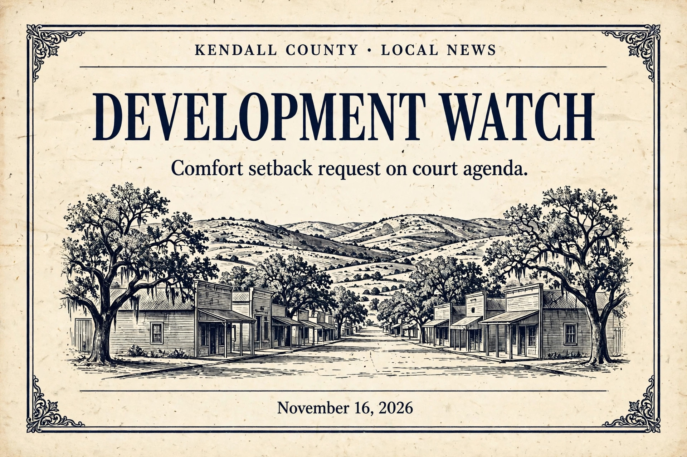

Commissioners Court agenda lists Comfort setback request, two guarantee releases
Commissioners Court agenda lists Comfort setback request, two guarantee releases
The posted agenda for the November 10 Kendall County Commissioners Court meeting listed a request for relief from the county setback rule for a proposed development at 714 High Street in Comfort, and two releases of financial guarantees for subdivision improvements.
Item 27 asked the court to reduce setbacks at 714 High Street, approximately 215 feet east of Seventh Street. A setback is the required distance between a building and the property line. Section 5.2.A.1 of the Kendall County Development Rules requires 25 feet on all sides. The request would reduce that to 0 feet off the south and east lines, and to 3 feet off the north and west lines. The agenda lists the owner as 714 High Street, LLC (Belinda Kay Pence).
Item 16.c listed releasing the financial guarantee for Becker Lane Business Park. A financial guarantee is money posted to ensure required improvements are completed. The guarantee was a bond and a cash deposit totaling $1,027,670.05, per the agenda, for street and drainage improvements. The agenda lists the owner as ALC Ranch, LTD (Philip E. Barnett).
Item 16.o listed releasing the financial guarantee for George's Ranch Unit 2A, near the intersection of SH 46 and Sweet Adeline. The guarantee was a bond of $4,152,025.70, per the agenda, for street, drainage, water, and sewer improvements. The agenda lists the owner as Lookout Development Group, L.P. (Michael Siefert).
The same agenda also listed a proposal to modify Section 1.2.A of the county development rules to clarify references to the County Engineer and the Development Engineer, and a proposal to name a private road off Possum Creek Road as Amendy Ranch Road to direct 911 responders.
The posted agenda for the November 18 special called meeting listed no plat or development items.
In Boerne, the Planning and Zoning Commission, City Council, and Zoning Board of Adjustment and Appeals meet November 17, and the Zoning Board of Adjustment and Appeals and City Council meet November 18, per the city Legistar calendar.
TxDOT's FM 3351 corridor project remains in environmental studies and schematic design, and at US 281 and SH 46 the contractor is performing nighttime paving for the final surface of SH 46, with an estimated completion of winter 2026, per TxDOT.
What happens next: Boerne's planning, council, and zoning board meetings are November 17 and 18, and the Commissioners Court special called meeting is November 18.